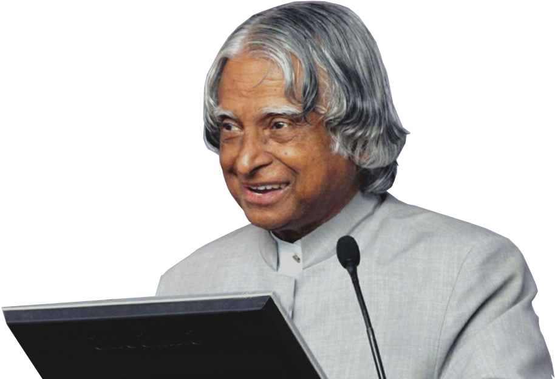

Visionary Scientist
He contributed to India’s defence and space missions and helped shape the nation’s technological future.
Tribute Page
The Missile Man of India
A visionary scientist, teacher, and leader who blended science, poetry, and humility to light the way for tomorrow’s youth.

Born on 15 October 1931 in Rameswaram, Tamil Nadu, Dr. A. P. J. Abdul Kalam grew up in a modest family and rose to become one of India’s most admired scientists and leaders. He was known for his discipline, humility, and strong belief in education as the foundation of national progress.
His life journey from a small town boy to the President of India became an inspiration for millions of young people. He believed that every child has the power to dream big and achieve excellence through hard work and persistence.
15 October 1931
Rameswaram, Tamil Nadu
Bharat Ratna, Padma Bhushan, Padma Vibhushan
He contributed to India’s defence and space missions and helped shape the nation’s technological future.
He inspired students to stay curious, work hard, and believe in the power of education and innovation.
His humility and perseverance made him a role model for millions of young people across the world.
Dr. Kalam studied physics and aerospace engineering and later worked with India’s defence and space organisations. His curiosity, dedication, and passion for science helped him become a central figure in India’s technological growth.
He was deeply interested in helping students and often encouraged them to stay curious, stay honest, and believe in themselves even when the path ahead seems difficult.
He urged young people to imagine the impossible, then turned those dreams into real achievements.
From rockets to research, his work was always rooted in serving the nation and empowering students.
His wisdom continues to guide new generations through books, lectures, and the power of curiosity.
Dr. Kalam believed that the youth of India could shape the future through knowledge, hard work, and courage. His life remains a symbol of simple living, great achievement, and national pride.
Even after leaving office, he kept teaching, writing, and inspiring students. He wrote books like Wings of Fire and Ignited Minds, which continue to influence generations of readers.
Learn more about his life“Dream, dream, dream. Dreams transform into thoughts and thoughts result in action.”